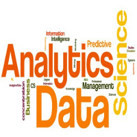

Portfolio

Visualizing Movie Data with Tableau
Tableau

A/B Testing the Udacity Free Trial Button
A/B Test
Identifying Fraud from the Enron Email Dataset
Scikit-learn , Machine Learning

Investigating the Financial Contributing Factors for the 2016 Presidential Campaign
R, Data Analysis
OSM: Wrangling and Exploring Data Obtained for the West Seattle Area of the WA State
SQL, Python, Data Clean-up, Data Analysis
Investigating All Factors that Contributed to the Survial Rate of the Titanic Passengers
Jupyter Notebook, Python
Resume
SUMMARY: Possesses impeccable analytical and extensive computational problem-solving skills using R and Python packages for data interpretation and Tableau for data visualization. Excellent oral and written communication skills with numerous peer-reviewed publications.
-
2010-2013
California Lutheran University
I earned my Bachelor of Science in Chemistry with double minors in Mathematics and Scientific Computation from California Lutheran University in May 2013.
-
September 2013
University of Washington, Seattle
I started my Ph.D. in analytical chemistry at the University of Washington, Seattle in September 2013. I am currently working under the supervision of Dr. Frantisek Turecek. My research focuses on the conformation and thermodynamics of peptide ions generated in the gas-phase.
-
February 2016
Institute of Organic Chemistry and Biochemistry, Prague, CZ.
In February 2016, I was sent to the Institute of Organic Chemistry and Biochemistry (IOCB) located in Prague, CZ as an exchange student for about 2 weeks. During my time at the IOCB, I learned how to simulate the molecular dynamics of various biological complexes at a semi-empirical level. This experiece has inpired me to further my understanding about computational chemistry and data analytics to solve numerous scientific problems. My passion for data science also started from here.
-

July 2016-Present
Udacity, Coursera, DataCamp
In parallel with my Ph.D. work, I started taking online courses offered by Coursera and DataCamp to learn the basics of R and to improve my Python skills, which I had briefly learned via my Scientific Computation minor. I also took formal classes on-campus such as Matrix Algebra to gain better understanding about the mathematical background behind the code. In November 2016, I began the Udacity's Nanodegree in Data Analytics, in which I have gained the experience to work with big dataset and utilize various machine learning techniques in building algorithms. I recently completed a second Udacity's Nanodegree in Business Analytics, which I learned how to work with advanced analytic and data visualiation tools such as Alteryx and Tableau.